Git es una herramienta muy útil para cualquier persona que esté aprendiendo a programar, ya que nos ayuda a organizar y guardar nuestro trabajo de forma ordenada. En esta guía, te explicaré cómo usar Git desde cero, empezando por la creación de un repositorio local hasta la conexión con un repositorio remoto en GitHub.
Para crear un repositorio local en tu máquina, sigue estos pasos:
Win + R, escribir cmd y presionar Enter
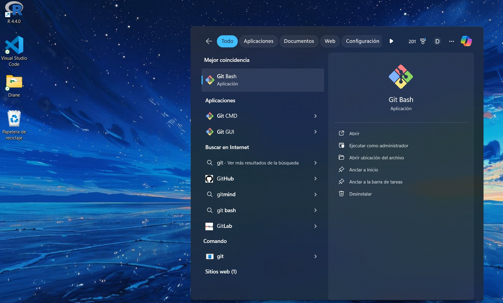
$ git --versionEste comando verifica la versión de Git instalada en tu sistema.
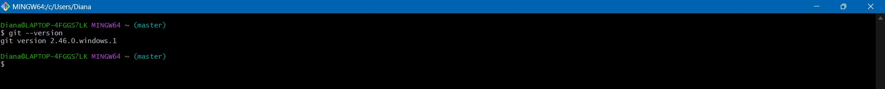
$ git config --global user.name "Diane"$ git config --global user.email "dianae2026@gmail.com"Configura tu nombre y correo electrónico para los commits.
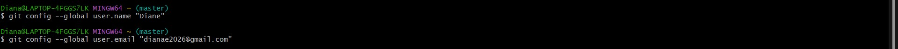
$ cd /c/Users/Diana/OneDrive/Documentos/Página\ webCambia al directorio donde tienes tu proyecto.
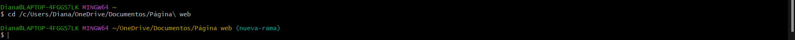
$ git initInicializa un nuevo repositorio Git en el directorio actual.
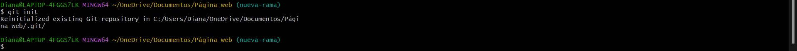
$ lsMuestra los archivos en el directorio actual.
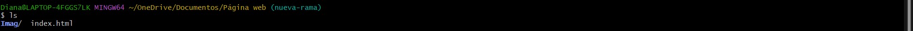
$ touch blog.htmlCrea un nuevo archivo llamado blog.html.
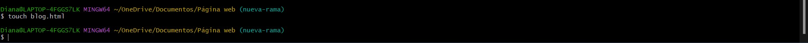
$ git add blog.htmlAgrega blog.html al área de preparación.
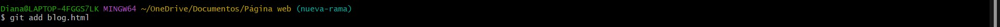
$ git commit -m "Agregar blog.html"Realiza un commit de los cambios agregados.
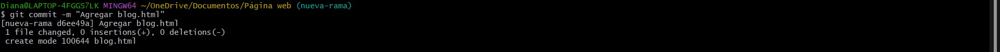
$ git checkout -b nueva-funcionalidadCrea y cambia a una nueva rama llamada nueva-funcionalidad.
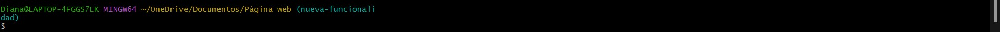
$ git add .Agrega todos los archivos al área de preparación.
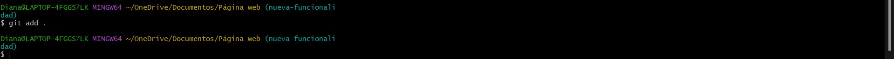
$ git commit -m "Nuevos cambios"Realiza un commit de todos los cambios en la nueva rama.
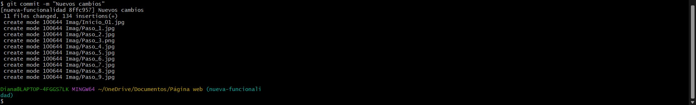
$ git checkout mainCambia de nuevo a la rama principal.
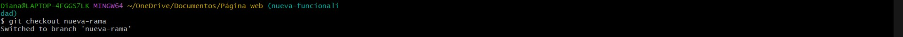
$ git merge nueva-funcionalidadFusiona los cambios de nueva-funcionalidad en la rama principal.
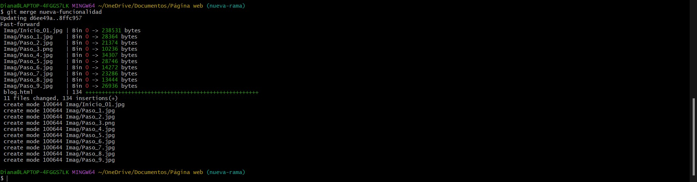
$ git remote add origin git@github.com:Dianesthr1703/Blog_G24.gitConecta tu repositorio local a tu repositorio en GitHub.
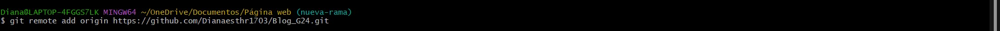
$ git push -u origin mainEnvía los cambios a tu repositorio en GitHub.
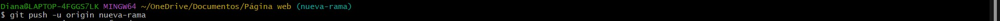
Recuerda siempre realizar commits frecuentes para mantener un buen historial de cambios y facilitar la colaboración.
Con estos pasos, ahora deberías tener una idea clara de cómo inicializar un repositorio local, crear ramas y realizar commits. Git es una herramienta poderosa que te ayudará a gestionar tu trabajo de manera efectiva. ¡Explora y practica!